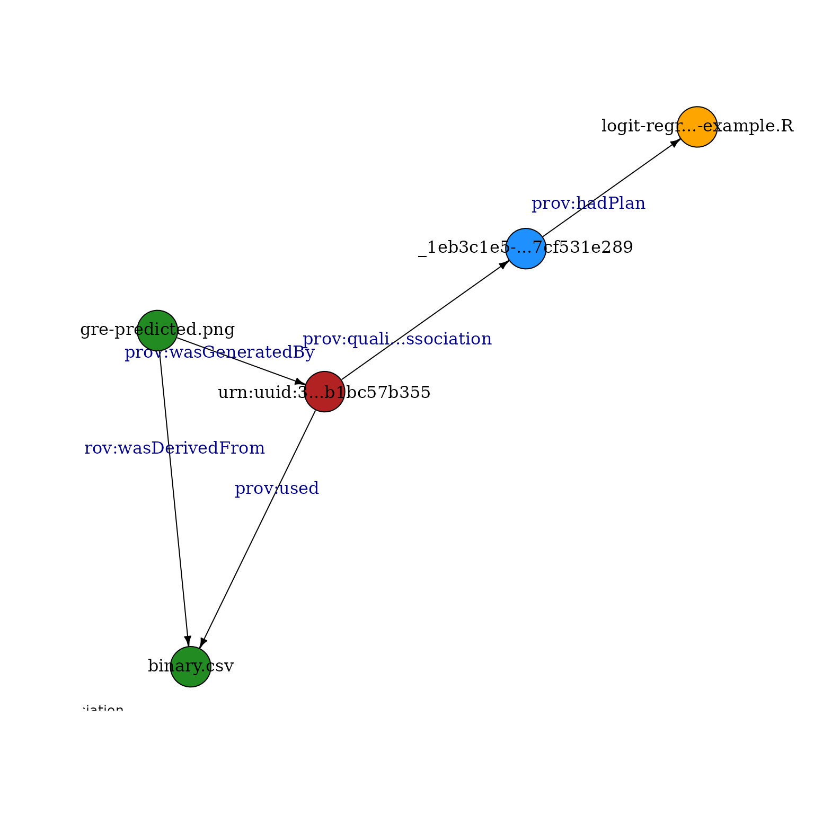

datapack R Package Overview
2024-03-05
Source:vignettes/datapack-overview.Rmd
datapack-overview.RmdOverview
The datapack R package provides an abstraction for collating multiple data objects of different types and metadata describing those objects into a bundle that can be transported and loaded using a single composite file. It is primarily meant as a container to bundle together files for transport to or from DataONE data repositories.
The methods in this package provide a convenient way to load data from common repositories such as DataONE into the R environment, and to document, serialize, and save data from R to data repositories.
Create a Single Object
The datapack DataObject class is a wrapper that contains both data and system metadata that describes the data. The data can be either R raw data or a data file, for example a CSV file. The system metadata includes attributes such as the object identifier, type, size, checksum, owner, version relationship to other objects, access rules, and other critical metadata. The DataObject class also holds additional metadata about the data file. For example, where the file should go when the package is downloaded. This is often times the same as the filepath however, care should be taken to not include any drive letters or unnecessary folders.
The following example shows how to create a DataObject locally from a CSV file:
library(datapack)
library(uuid)
csvfile <- system.file("extdata/sample-data.csv", package="datapack")
myId <- paste("urn:uuid:", UUIDgenerate(), sep="")
myObj <- new("DataObject", id=myId, format="text/csv", filename=csvfile, targetPath="extdata/sample-data.csv")The DataObject myObj now contains the CSV data as well as the system-level information describing the file, such as its identifier, type, and checksum. The getData method can be used to extract the data content of a DataObject. Using the example DataObject:
rawData <- getData(myObj)This raw data can be converted back to CSV format using the R commands:
Alternatively, the CSV data could be converted into a data frame using standard R functions:
df <- read.csv(textConnection(rawToChar(rawData)))
head(df)## Species_Name light temp cont moist react nutr
## 1 Achillea millefolium 8 0 0 4 0 5
## 2 Achillea tanacetifolia 0 0 0 0 0 0
## 3 Aconitum lycoctonum 3 4 4 7 7 8
## 4 Aconitum variegatum 5 4 4 7 8 7
## 5 Actaea spicata 3 5 4 5 6 7
## 6 Aegopodium podagraria 5 5 3 6 7 8If the data were another format than CSV, such as PNG, JPEG, or NetCDF, the corresponding R packages could be used to handle the object.
Each DataObject has an identifier which can be used to refer to that object, and is meant to be globally unique so that it can be used in data repositories such as those from the DataONE federation. To retrieve the identifier associated with a DataObject:
getIdentifier(myObj)## [1] "urn:uuid:b7788262-177a-4ddf-89c2-1198a245c6e4"In this case, the identifier was created in the UUID format, but other identifiers such as DOIs (Digital Object Identifers) can also be used. Each object also is associated with a specific format. To retrieve the format type:
getFormatId(myObj)## [1] "text/csv"System Metadata
All system metadata information for a DataObject can be accessed directly from the SystemMetadata object contained in the DataObject. To access the fileName field, for example:
myObj@sysmeta@fileName## [1] "sample-data.csv"The system metadata contains access policy information for the DataObject that could be used by a data repository that the object is uploaded to. For example, when a DataObject is uploaded to a DataONE Member Node, the access policy is applied to the uploaded data and controls access to the data on the Member Node by DataONE users.
Access Policy
Before the DataObject is uploaded, access can be set so that anyone can read the uploaded data:
myObj <- setPublicAccess(myObj)
myObj@sysmeta@accessPolicy## subject permission
## 1 public readIndividual access rules can also be added one at a time. The access rules are expressed using the unique identifier for an individual, such as their ORCID identity, or whatever form the repository supports.
myObj <- addAccessRule(myObj, "https://orcid.org/0000-0003-0077-4738", "write")
myObj@sysmeta@accessPolicy## subject permission
## 1 public read
## 2 https://orcid.org/0000-0003-0077-4738 writeThe permissions that can be set include:
- read: permission to read the data from the repository
- write: permission to perform update operations on the data
- changePermission: permission to control access to the data on the repository
Alternatively, multiple access rules can be added:
accessRules <- data.frame(subject=c("uid=jsmith,o=Account,dc=example,dc=com",
"uid=jadams,o=Account,dc=example,dc=org"),
permission=c("write", "changePermission"))
myObj <- addAccessRule(myObj, accessRules)
myObj@sysmeta@accessPolicy## subject permission
## 1 public read
## 2 https://orcid.org/0000-0003-0077-4738 write
## 3 uid=jsmith,o=Account,dc=example,dc=com write
## 4 uid=jadams,o=Account,dc=example,dc=org changePermissionThe dataone R package can be used to upload or download DataObjects to a DataONE Member Node. Please see the web page for the dataone R package and the vignettes for more information:
Create a Collection of Objects
A DataPackage is a container for a set of DataObjects. DataObject is a class that is a proxy for data of any type, including traditional data like CSV, tabular data, and spatial rasters, but also for non-traditional objects like derived data, figures, and scripts in R and Python. A collection of related DataObjects can be placed in a DataPackage and actions can be performed on it, such as serializing the entire collection of objects into a package file, or uploading all package member objects to a data repository.
Figure 1. is a diagram of a typical DataPackage showing a metadata file that describes, or documents the data granules that the package contains.
This example creates a DataPackage with one DataObject containing metadata and two others containing science data. First the individual objects are created:
metadataFile <- system.file("extdata/sample-eml.xml", package="datapack")
metadataId <- "metadataId"
metadataObj <- new("DataObject", id=metadataId, format="eml://ecoinformatics.org/eml-2.1.0", file=metadataFile)
csvfile <- system.file("extdata/sample-data.csv", package="datapack")
sciId <- "sciId1"
sciObj <- new("DataObject", id=sciId, format="text/csv", filename=csvfile)
outFile <- system.file("extdata/sample-data-filtered.csv", package="datapack")
sciId2 <- "sciId2"
sciObj2 <- new("DataObject", id=sciId2, filename=outFile, format="text/csv")The identifier values used in this example are simple and easily recognizable for demonstration purposes. A more standard unique identifier can be created with the uuid::UUIDgenerate() function:
myid <- paste("urn:uuid:", UUIDgenerate(), sep="")
myid## [1] "urn:uuid:829d8ced-a1fd-4741-a5fe-a4f6ece109e2"Next a DataPackage is created and the DataObjects are added to it. Note the mo argument in the addMember function when adding the data file. Including this argument specifies that the metadata object documents the data object. More information on relationships between DataObjects is included in the next section.
dp <- new("DataPackage")
dp <- addMember(dp, do = metadataObj)
dp <- addMember(dp, do = sciObj, mo = metadataObj)
# The second object will be added in the next section Information can also be extracted from the DataPackage. To show the identifiers of the DataObjects that are in the package:
getIdentifiers(dp)## [1] "metadataId" "sciId1"To show the number of DataObjects in the package:
getSize(dp)## [1] 2To extract the data in a DataObject as raw data, ask for the data using the identifier of the DataObject:
sciObjRaw <- getData(dp, sciId)To get access to the full instance of the DataObject class representing a data object, use the datapack::getMember function and pass in the identifier of the desired object, which will return an instance of the DataObject class:
mySciObj <- getMember(dp, sciId)Relationships Between DataObjects
The relationships between DataObjects in a DataPackage can be recorded in the DataPackage. For example, a typical relationship is that a DataObject containing a metadata document in a domain specific format such as Ecological Metadata Language (EML) or ISO19139 geospatial metadata can describe, or document, DataObjects containing associated science data. Adding relationship information about data package members may assist a consumer of the package in better understanding the contents of the package and how to make use of the package.
While the DataPackage can record any type of relationships that are important to a community, we have provided functions to establish common relationships that are needed to understand scientific data in the DataONE federation. These include the following typical provenance properties:
-
cito:documents: for establishing that a metadata document provides descriptive information about one or more associated data objects -
prov:wasDerivedFrom: for asserting that a derived data object was created using data from one or more source data objects -
prov:used: for asserting that when a program (such as an R script) was executed that it used one or more source data objects as inputs -
prov:wasGeneratedBy: for asserting that when a program (such as an R script) was executed that it generated one or more derived data objects as outputs
Figure 2. A DataPackage with provenance relationships.
Linking a metadata file with one or more data files using cito:documents
As mentioned above, the fastest way to add the cito:documents relationship is to include the metadata object when a science data object is added to the package:
dp <- addMember(dp, do = sciObj2, mo = metadataObj)
getRelationships(dp, condense=TRUE)## subject predicate object
## 4 sample-dat...ltered.csv cito:isDocumentedBy sample-eml.xml
## 2 sample-data.csv cito:isDocumentedBy sample-eml.xml
## 1 sample-eml.xml cito:documents sample-data.csv
## 3 sample-eml.xml cito:documents sample-dat...ltered.csvIn that example, the sciObj2 DataObject is added to the package using the addMember call, and the metadata object metadataObj is passed in to the function as well. This tells the DataPackage that metadataId cito:documents sciId2. The cito:documents relationship is defined by the Citation Typing Ontology (CITO)).
Asserting data provenance relationships between objects
Relationships that describe the processing history of package members can be added. For example, a program that performs a modeling calculation might read one or more source data files as inputs, perform a calculation based on the data read, and then write a data or graphics file characterizing the results of the model run.
The datapack package uses the ProvONE data model to represent provenance relationships.
The following example demonstrates how to insert provenance relationships into a DataPackage for the R program logit-regression.R that reads the source data file binary.csv and generates the derived image file gre-predicted.png. Using the example DataPackage for which DataObjects for the program input and output have already been added, we create a DataObject for the program, and call describeWorkflow to add the necessary provenance relationships:
dp <- new("DataPackage")
metadataFile <- system.file("extdata/sample-eml.xml", package="datapack")
metadataId <- "metadataId"
metadataObj <- new("DataObject", id=metadataId, format="eml://ecoinformatics.org/eml-2.1.0", file=metadataFile)
# This DataObject contains the program script that was executed
progObj <- new("DataObject", format="application/R",
filename=system.file("extdata/pkg-example/logit-regression-example.R", package="datapack"))
dp <- addMember(dp, progObj, mo = metadataObj)
doIn <- new("DataObject", format="text/csv",
filename=system.file("./extdata/pkg-example/binary.csv", package="datapack"))
dp <- addMember(dp, doIn, mo = metadataObj)
doOut <- new("DataObject", format="image/png",
filename=system.file("./extdata/pkg-example/gre-predicted.png", package="datapack"))
dp <- addMember(dp, doOut, mo = metadataObj)
# The arguments "sources" and "derivations" can also contain lists of "DataObjects"
dp <- describeWorkflow(dp, sources=doIn, program=progObj, derivations=doOut)
rels <- getRelationships(dp, condense=TRUE)
rels[grepl("prov:", rels$predicate),]## subject predicate object
## 11 _1eb3c1e5-...7cf531e289 prov:hadPlan logit-regr...-example.R
## 17 gre-predicted.png prov:wasDerivedFrom binary.csv
## 16 gre-predicted.png prov:wasGeneratedBy urn:uuid:3...b1bc57b355
## 9 urn:uuid:3...b1bc57b355 prov:quali...ssociation _1eb3c1e5-...7cf531e289
## 15 urn:uuid:3...b1bc57b355 prov:used binary.csv
Note that in this example, the R script had previously been run and generated the image file before describeWorkflow() was called. The sources and derivations arguments for describeWorkflow() can be lists of either DataObjects or the identifiers of DataObjects.
Inserting other (arbitrary) relationships
Other types of relationships between DataPackage member DataObjects can be recorded with the insertRelationship method. The main requirement is that each relationship to be described needs to have a unique URI that is drawn from a controlled vocabulary like the Citation Typing Ontology described above. The cito:documents relationship is the default used by insertRelationship, so the relationship type doesn’t need to be specified in this case. For example, with the example DataPackage created above, we can add the cito:documents relationship:
dp <- insertRelationship(dp, subjectID=metadataId, objectIDs=sciId)
relations <- getRelationships(dp, condense=TRUE)
relations[grepl("cito:documents", relations$predicate),]## subject predicate object
## 18 sample-eml.xml cito:documents sciId1
## 5 sample-eml.xml cito:documents gre-predicted.png
## 1 sample-eml.xml cito:documents logit-regr...-example.R
## 3 sample-eml.xml cito:documents binary.csvRelationships can be fully specified using the URI of the concept, as shown in the following statement that adds a provenance relationship between two objects in the example package:
dp <- insertRelationship(dp, subjectID=sciId2, objectIDs=sciId,
predicate="https://www.w3.org/ns/prov#wasDerivedFrom")
relations <- getRelationships(dp, condense=TRUE)
relations[grepl("prov:wasDerivedFrom", relations$predicate),]The relationships contained in a DataPackage conform to the Resource Description Framework (RDF), which is a World Wide Web Consortium standard for describing web accessible resources.
Describing The Contents of a DataPackage
In order to transport a DataPackage, for example to a data repository, a description of the contents of the DataPackage is created so that the consumer of the DataPackage can determine how to extract and process the contents.
A DataPackage can produce a standard description of its members and relationships which conforms to the Open Archives Initiative Object Reuse and Exchange (OAI-ORE) specification, which is a widely used standard to describe aggregations of web accessible resources. This OAI-ORE description is referred to as a resource map.
The serializePackage method will create Resource Description Framework serialization of a resource map, written to a file in this case, that conforms to the OAI-ORE specification.
To create a resource map for the example DataPackage:
tf <- tempfile()
packageId <- paste("urn:uuid:", UUIDgenerate(), sep="")
serializePackage(dp, file=tf, id=packageId)This example writes to a tempfile using the default serialization format of “rdfxml”. Also the URLs for each package member are prepended with the default value of the DataONE resolve service, which would be the URL that could be used to access this data object if the package is uploaded to a DataONE member node.
A different value to be prepended to each identifier can be specified with the resoveURI argument. To specify that no value be prepended to the identifier URLs, specify a zero-length character:
tf <- tempfile()
packageId <- paste("urn:uuid:", UUIDgenerate(), sep="")
serializePackage(dp, file=tf, id=packageId, resolveURI="")It is also possible to create a JSON serialization, if desired:
tf <- tempfile()
packageId <- paste("urn:uuid:", UUIDgenerate(), sep="")
serializePackage(dp, file=tf, id=packageId, syntaxName="json", mimeType="application/json", resolveURI="")Saving DataPackage Contents to a File
The contents of a DataPackage can be saved to a file using the serializeToBagIt method. This creates a BagIt file, which is a hierarchical file packaging format.
The created BagIt file contains the data from the DataPackage members as well as an OAI-ORE resource map that is automatically created by serializeToBagIt.
The following R command shows how to create the BagIt file for the example DataPackage:
bagitFilename <- serializeToBagIt(dp)The variable bagitFilename contains the file path to the temporary BagIt file. This file should be copied to another location before quitting or restarting R:
file.copy(bagitFilename, "~/myPackageFile.zip")This serialized BagIt version of the file is an excellent way to transport all of the files and metadata of a DataPackage to a data repository or a collaborator.